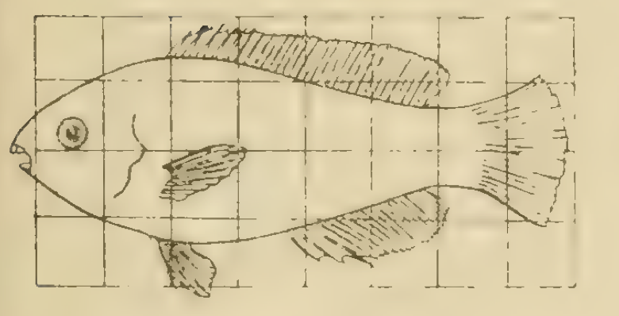

In D’Arcy Thompson book ‘On Growth and Form’ he considers how the shapes of related species can be understood using mathematical maps. In Figure 1 you can see two different species of fish.
In the app in Figure 2 you can explore mappings similar to those considered by D’Arcy Thompson. The default image initially used is a stock image used in image processing.
- Each map depends on the value of a single parameter.
- A number of different maps are considered.
- You can upload images from your computer.
If you save the images in Figure 1 to your computer (right click and ‘Save Image to Download’) you can upload them to the App and explore the effect of the different transformations.


#| standalone: true
#| components: [viewer]
#| viewerHeight: 500
from shiny import App, Inputs, Outputs, Session, render, ui
from shiny import reactive
import numpy as np
import matplotlib.pyplot as plt
import skimage as ski
import pyodide
from skimage.transform import SimilarityTransform
from skimage.transform import warp
from skimage.transform import PiecewiseAffineTransform
from skimage.transform import AffineTransform
from skimage.io import imread
import io
from pathlib import Path
def ChooseTransform(transform,im_shape,a,num_disc_points):
rows=im_shape[0]
cols=im_shape[1]
src_cols = np.linspace(0, cols, num_disc_points)
src_rows = np.linspace(0, rows, num_disc_points)
src_rows, src_cols = np.meshgrid(src_rows, src_cols)
src = np.dstack([src_cols.flat, src_rows.flat])[0]
dst_rows = src[:, 1]
dst_cols = src[:, 0]
# add sinusoidal oscillation to row coordinates
#transform='yscaleDarcy299Fig147'
if transform=='identity':
dst_rows = src[:, 1]
dst_cols = src[:, 0]
elif transform=='yscale':
yscaleparam=a
dst_rows = dst_rows*yscaleparam
dst_cols = src[:, 0]
elif transform=='yscaleDarcy299Fig151':
sc_factor=a
k_x=sc_factor*((dst_cols-cols/2.0)/cols)**1.0+1.0
dst_rows = k_x*(dst_rows-rows/2.0)+rows/2.0
#dst_cols = src[:, 0]
elif transform=='yscaleDarcy299Fig149':
dst_rows = a*(dst_rows-rows/2.0)*(2.5-1.4*((dst_cols-cols/2.0)/(cols/2.0))**2.0)+rows/2.0
#dst_cols = (dst_cols-cols/2.0)*(dst_rows-rows/2.0)**2.0+cols/2.0
#dst_cols = src[:, 0]
#dst_cols = src[:, 0]
elif transform=='yscaleDarcy299Fig147':
k_y=-a
dst_cols = dst_cols+k_y*dst_rows
#dst_cols = src[:, 0]
elif transform=='yscalelog':
L=np.max(dst_rows)
dst_rows = (np.log(1.0+(dst_rows)/L))*L/np.log(2.0)
#dst_cols = src[:, 0]
elif transform=='yscalepower':
L=np.max(dst_rows)
n=a
dst_rows = L*(dst_rows/L)**n
#dst_cols = src[:, 0]
elif transform=='radialscale':
dst_rows_max=np.max(dst_rows)
dst_cols_max=np.max(dst_cols)
R_typical=30.0
radius=R_typical*((radius.astype(float))/R_typical)**1.5
#theta=theta*1.0
dst_rows=radius*np.sin(theta)+centre[0]
dst_cols=radius*np.cos(theta)+centre[1]
#dst_rows=dst_rows/np.max(dst_rows)*dst_rows_max
#dst_cols=dst_cols/np.max(dst_cols)*dst_cols_max
elif transform =='thetascale':
dst_rows_max=np.max(dst_rows)
dst_cols_max=np.max(dst_cols)
radius=(radius.astype(float))**1.25
theta=theta*0.25
dst_rows=radius*np.sin(theta)+centre[0]
dst_cols=radius*np.cos(theta)+centre[1]
#dst_rows=dst_rows/np.max(dst_rows)*dst_rows_max
#dst_cols=dst_cols/np.max(dst_cols)*dst_cols_max
elif transform=='sine':
dst_rows = src[:, 1] - np.sin(np.linspace(0, 3 * np.pi, src.shape[0])) * 50
dst_cols = src[:, 0]
dst_rows *= 1.5
dst_rows -= 1.5 * 50
dst = np.vstack([dst_cols, dst_rows]).T
# Calculate the corners of the rotated image
tform = PiecewiseAffineTransform()
tform.estimate(src, dst)
return tform, dst,src, rows, cols,dst_cols,dst_rows
appdir = Path(__file__).parent
transform_vec=['identity','yscale','yscaleDarcy299Fig151','yscaleDarcy299Fig149','yscaleDarcy299Fig147','yscalelog','yscalepower','radialscale','thetascale']
appdir = Path(__file__).parent
app_ui = ui.page_fluid(
ui.layout_sidebar(
ui.panel_sidebar(
ui.input_slider(id="a",label="Parameter",min=-1.0,max=3,value=1.0,step=0.1),
ui.input_select(id="trans",label="Transform",choices=[0,1,2,3,4,5],selected=[2]),
ui.input_file(id='input_file',label='Input file',width='1%',button_label='Upload'),width=3,
#ui.input_slider(id="d",label="d",min=0,max=4,value=1,step=1),
),
ui.panel_main(ui.output_plot("plot"),width=60),
),
)
def server(input: Inputs, output: Outputs, session: Session):
@reactive.calc
def load_image():
im_index=1#input.d()
#load_image=1
if im_index==1:
image = ski.data.coins()
image_orig=image[-1:0:-1,:]
return image_orig
@render.plot
def plot():
image= load_image()
def parsed_file():
file: list[FileInfo] | None = input.input_file()
if file is None:
return pd.DataFrame()
return imread( # pyright: ignore[reportUnknownMemberType]
file[0]["datapath"])
if input.input_file():
image = parsed_file()
#image=image[-1:0:-1]
fig,ax=plt.subplots(1,2,sharey=True,sharex=True)
a =float(input.a())
trans =int(input.trans())
transform=transform_vec[trans]
tform,dst,src,rows, cols,dst_cols,dst_rows= ChooseTransform(transform,image.shape,a,4)
corners = np.array([[0, 0], [0, image.shape[0]], [image.shape[1], 0], [image.shape[1], image.shape[0]]])
tformed_corners = tform(corners)
minc = tformed_corners.min(axis=0)
maxc = tformed_corners.max(axis=0)
output_shape = 2*(np.ceil(maxc)[::-1]-np.ceil(minc)[::-1]).astype(int)
# Calculate the translation required to move all points into positive coordinates
min_coords = dst.min(axis=0)
translation = -min_coords
tform_shift = AffineTransform(translation=translation)
# Apply the warp with translation to ensure positive coordinates
output_shape = (int(rows + 2*translation[1]), int(cols + 2*translation[0]))
new_image_trans = warp(image, tform_shift.inverse , output_shape=output_shape)
#tform,dst,src= ChooseTransform(transform)
tform,dst,src,rows, cols,dst_cols,dst_rows= ChooseTransform(transform,new_image_trans.shape,a,20)
new_image = warp(new_image_trans,tform.inverse)
#x_plt=np.linspace(0,cols,cols)
#y_plt=np.linspace(0,rows,rows)
#[x_plt_mesh,y_plt_mesh]=np.meshgrid(x_plt,y_plt)
#scale_x=cols/np.max(dst_cols)
#scale_y=rows/np.max(dst_rows)
#new_x_plt=np.linspace(0,cols*scale_x,cols)
#new_y_plt=np.linspace(0,rows*scale_y,rows)
#[newx_plt_mesh,newy_plt_mesh]=np.meshgrid(new_x_plt,new_y_plt)
ax[0].imshow(image)
ax[0].set_title('Original')
ax[1].imshow(new_image)
ax[1].set_title('Transformed')
plt.show()
app = App(app_ui, server)
At Dundee, concepts from geometry are studied in core modules Maths 1A and Maths 1B.
At Level 3 in the module Differential Geometry students study generalisations of 2D mappings to arbitrarily curved spaces.
You can find out more about these modules here.